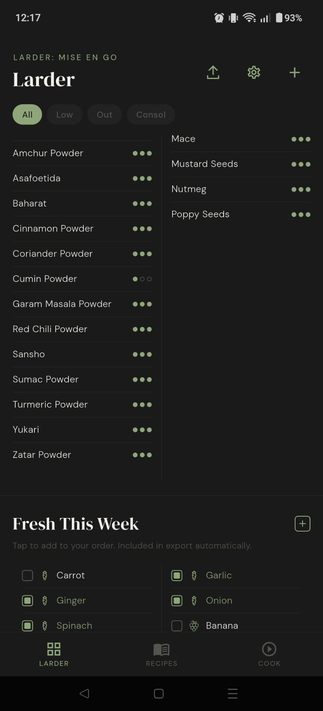

Your larder

What’s ready to cook

Mise en place
No generic algorithm recommending meals you'd never make. Larder: Mise & Go pairs your personal collection of curated recipes against your pantry staples and weekly fresh haul — instantly showing you what’s ready to cook.
Available on Google Play
A curated kitchen shouldn’t feel like an inventory audit. Larder gives you a high-signal, bird’s-eye view of your kitchen station — so you spend zero time logging exact grams and more time at the stove.
Tap your core regional preferences — Italian, Japanese, Indian, Mexican. Larder automatically populates your baseline larder with fundamental staple anchors, so you never spend hours typing in spices or oils on day one.
Skim your pre-filled larder and adjust stock states in seconds using intuitive dot indicators — full, low, or out. Know what you have without weighing ingredients or digging through cabinets.
Drop in a recipe URL or paste your own notes. Larder structures and indexes your personal collection — mise en place order, ingredient matching, all of it — directly against your larder staples.
Add your market purchases or weekly fresh produce. Larder cross-references your larder and fresh haul against your recipe vault and shows you exactly which dishes you can cook right now — and what’s one ingredient away.
Your personal recipe vault is stored locally on your device, with optional private cloud backup to your own Google Drive. No tracking, no food ads, no corporate noise.
Stop asking what’s for dinner. Start cooking from the larder you’ve built.
Download Larder: Mise & Go